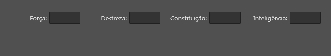
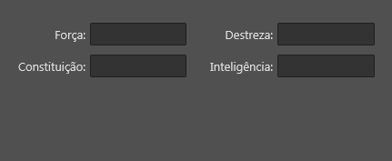
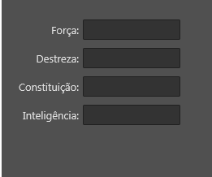

Tag flowPart
Tag flowPart
A tag/componente flowPart representa uma parte dinâmica de um layout dinâmico (Ver Tag flowLayout). É um controle similar à uma tag layout, mas com a possibilidade de definir uma largura dinâmica, isto é, um layout que muda sua largura de acordo com a necessidade.
Observação: Deve ser usado junto com a Tag flowLayout.
Herança
O flowPart possui todas as características da tag layout.
Veja:
Características
Além das características herdadas, o flowPart possui também as seguintes características:
Propriedades e atributos
| Propriedade | Tipo | Valor Padrão | Descrição |
|---|---|---|---|
| minWidth | Float | \<o mesmo que width> | Define a largura mínima que esta parte dinâmica pode assumir. Quando não definido, o valor "width" será usado e, portanto, a parte não mudará sua largura de forma dinâmica. |
| maxWidth | Float | \<o mesmo que width> | Define a largura máxima que esta parte dinâmica pode assumir. Quando não definido, o valor "width" será usado e, portanto, a parte não mudará sua largura de forma dinâmica. |
| minScaledWidth | Float | \<o mesmo que minWidth> | Este valor deve ser menor ou igual à propriedade "minWidth". Quando definido, o layout dinâmico poderá utilizar, para este controle, uma largura menor que "minWidth", porém escalando o conteúdo de forma proporcional até uma largura mínima de "minScaledWidth" |
| maxScaledWidth | Float | \<o mesmo que maxWidth> | Este valor deve ser maior ou igual à propriedade "maxWidth". Quando definido, o layout dinâmico poderá utilizar, para este controle, uma largura maior que "maxWidth", porém escalando o conteúdo de forma proporcional até uma largura máxima de "maxScaledWidth" |
| avoidScale | Boolean | false | Quando true e quando alguma das propriedades "minScaledWidth" e "maxScaledWidth" estiverem definidas, o layout dinâmico assumirá uma largura menor que "minWidth" ou maior que "maxWidth" apenas em último caso (Por exemplo: Quando um controle por si só não caber numa única linha). |
| vertAlign | Enumerado: "leading" "center" "trailing" | "leading" | Na linha do layout dinâmico que este controle foi alocado, qual será seu alinhamento vertical? "leading" - Este controle estará alinhado no topo de sua linha "center" - Este controle estará alinhado no centro de sua linha "trailing" - Este controle estará alinhado no rodapé de sua linha. |
| stepSizes | Arranjo de Float | {} | Por padrão, este controle poderá ter qualquer largura entre "minWidth" e "maxWidth" (uma faixa de números reais). Ao usar "stepSizes", este controle assumirá apenas alguma das larguras que estão no arranjo. Exemplos: {100, 200, 300} - O controle poderá assumir larguras 100, 200 ou 300.. Não poderá assumir, por exemplo, a largura 150. {200, 450} - o controle poderá assumir ou a largura de 200 ou de 450. Observação: Ao usar esta propriedade, o controle passa a desconsiderar as propriedades "minWidth" e "maxWidth" (porém minScaledWidth e maxScaledWidth continuam sendo respeitados) |
| adjustHeightToLine | Boolean | false | Quando true, este controle pode se redimensionar a fim de ocupar todo o espaço vertical da linha em que foi alocado. |
Exemplos
Exemplo 1 - Layout Dinâmico usando flowPart para se ajustar a vários tamanhos de interfaces
| \<?xml version="1.0" encoding="UTF-8"?> \<form name="frmFichaTeste"> \<style> flowPart { margins: {left=5, right=5, top=5, bottom=5}; } label { width: 75; horzTextAlign: trailing; margins: {right=5}; } \</style> \<flowLayout align="client" orientation="horizontal" horzAlign="justify" margins="{left=20, top=20, bottom=20, right=20}"> \<flowPart minWidth="130" maxWidth="200" height="25"> \<label align="left" text="Força: "/> \<edit align="client"/> \</flowPart> \<flowPart minWidth="130" maxWidth="200" height="25"> \<label align="left" text="Destreza: "/> \<edit align="client"/> \</flowPart> \<flowPart minWidth="130" maxWidth="200" height="25"> \<label align="left" text="Constituição: "/> \<edit align="client"/> \</flowPart> \<flowPart minWidth="130" maxWidth="200" height="25"> \<label align="left" text="Inteligência: "/> \<edit align="client"/> \</flowPart> \</flowLayout> \</form> |
|---|
\ \ 

Neste exemplo foi utilizada a Tag style para aplicar algumas propriedades a vários controles de uma só vez. Cada tag flowPart usada pode assumir largura entre 130 e 200.
Created with the Personal Edition of HelpNDoc: Transform Your Word Doc into a Professional-Quality eBook with HelpNDoc